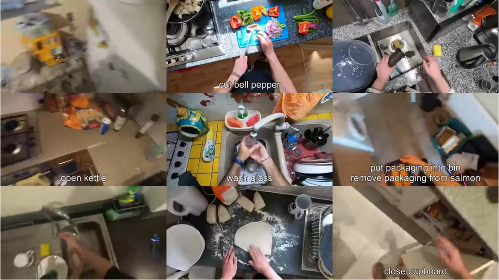
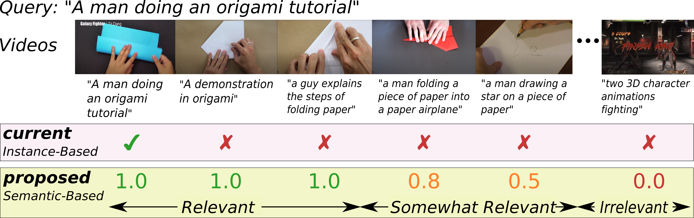

Research

|
Ego4D: Around the World in 3,000 Hours of Egocentric Video
Kristen Grauman, Andrew Westbury, Eugene Byrne, Zachary Chavis, Antonino Furnari, Rohit Girdhar, Jackson Hamburger, Hao Jiang, Miao Liu, Xingyu Liu, Miguel Martin, Tushar Nagarajan, Ilija Radosavovic, Santhosh Kumar Ramakrishnan, Fiona Ryan, Jayant Sharma, Michael Wray, Mengmeng Xu, Eric Zhongcong Xu, Chen Zhao, Siddhant Bansal, Dhruv Batra, Vincent Cartillier, Sean Crane, Tien Do, Morrie Doulaty, Akshay Erapalli, Christoph Feichtenhofer, Adriano Fragomeni, Qichen Fu, Christian Fuegen, Abrham Gebreselasie, Cristina Gonzalez, James Hillis, Xuhua Huang, Yifei Huang, Wenqi Jia, Weslie Khoo, Jachym Kolar, Satwik Kottur, Anurag Kumar, Federico Landini, Chao Li, Yanghao Li, Zhenqiang Li, Karttikeya Mangalam, Raghava Modhugu, Jonathan Munro, Tullie Murrell, Takumi Nishiyasu, Will Price, Paola Ruiz Puentes, Merey Ramazanova, Leda Sari, Kiran Somasundaram, Audrey Southerland, Yusuke Sugano, Ruijie Tao, Minh Vo, Yuchen Wang, Xindi Wu, Takuma Yagi, Yunyi Zhu, Pablo Arbelaez, David Crandall, Dima Damen, Giovanni Maria Farinella, Bernard Ghanem, Vamsi Krishna Ithapu, C. V. Jawahar, Hanbyul Joo, Kris Kitani, Haizhou Li, Richard Newcombe, Aude Oliva, Hyun Soo Park, James M. Rehg, Yoichi Sato, Jianbo Shi, Mike Zheng Shou, Antonio Torralba, Lorenzo Torresani, Mingfei Yan, and Jitendra Malik IEEE/CVF Computer Vision and Pattern Recognition (CVPR) 2022 [Webpage] [arXiv] [Dataset] |
|  |
Rescaling Egocentric Vision
Dima Damen, Hazel Doughty, Giovanni Maria Farinella, Antonino Furnari, Jian Ma, Evangelos Kazakos, Davide Moltisanti, Jonathan Munro, Toby Perrett, Will Price, and Michael Wray Springer International Journal of Computer Vision (IJCV), 2021 [Webpage] [Dataset] |
|  |
On Semantic Similarity in Video Retrieval
Michael Wray, Hazel Doughty, and Dima Damen IEEE Conference on Computer Vision and Pattern Recognition, 2021. [Webpage] [arXiv] [Code] [pdf] |

|
Supervision Level Scales
Dima Damen, Michael Wray arXiv, 2020 [arXiv] |

|
Fine-Grained Action Retrieval Through Multiple Parts-of-Speech Embeddings
Michael Wray, Diane Larlus, Gabriela Csurka, and Dima Damen IEEE International Conference of Computer Vision, 2019 [Webpage] [arXiv] [Code] [pdf] |

|
Learning Visual Actions Using Multiple Verb-Only Labels
Michael Wray and Dima Damen BMVA British Machine Vision Conference, 2019 [Webpage] [arXiv] [Annotations] [pdf] |
|
Scaling Egocentric Vision: The EPIC-KITCHENS Dataset
Dima Damen, Hazel Doughty, Giovanni Maria Farinella, Sanja Fidler, Antonino Furnari, Evangelos Kazakos, Davide Moltisanti, Jonathan Munro, Toby Perrett, Will Price, and Michael Wray Springer European Conference on Computer Vision, 2018 [Webpage] [Dataset] |
|

|
Trespassing the Boundaries: Labeling Temporal Bounds For Object Interactions in Egocentric Video
Davide Moltisanti, Michael Wray, Walterio Mayol-Cuevas, and Dima Damen IEEE International Conference on Computer Vision 2019 [Webpage] [arXiv] [pdf] |

|
SEMBED: Semantic Embedding of Egocentric Action Videos
Michael Wray(*), Davide Moltisanti(*), Walterio Mayol-Cuevas, and Dima Damen Egocentric Perception, Interaction and Computing Workshop at ECCV 2016 [Webpage] [arXiv] |